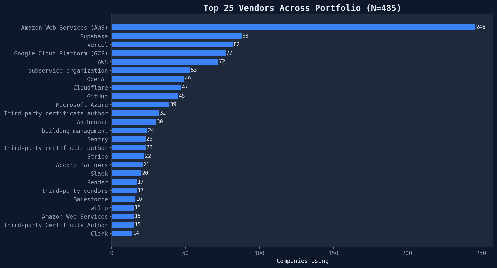
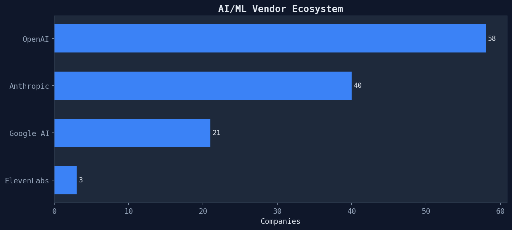

Tech Due Diligence
Meta-Analysis of 485 SOC 2 Compliance Reports
Quantitative analysis of security maturity, cloud infrastructure, vendor ecosystems, and investment readiness across a portfolio of early-stage technology companies.

Executive Overview
Portfolio-wide summary of 485 SOC 2 compliance reports

Score Deep Dive
What drives high scores — dimension analysis of 121 scored companies

Cloud Infrastructure Landscape
AWS dominance, PaaS-first patterns, and platform concentration risk

Security Maturity
Three-tier security ladder across 485 SOC 2 companies

Vendor Ecosystem
Who powers these companies — and what vendor transparency reveals

Architecture Patterns
Monolith, microservices, serverless — what patterns dominate and which score highest

BCDR & Resilience
Business continuity, disaster recovery, and the policy-vs-practice gap

Compliance Quality
Type 1 vs Type 2, auditor landscape, and template artifact detection

AI/ML Infrastructure
LLM providers, vector databases, and the emerging AI tech stack

Red Flag Analysis
Most common risks, what they mean, and which ones matter most

Investment Readiness
From 485 companies to the investable few — the quality funnel

Top Performers
What the best companies do differently — profiling the top 20

Funding Signals
Does more money mean better tech? Investor patterns across 27 researched companies
Generated from 485 SOC 2 compliance reports · Delve Tech DD Pipeline · 2026-03-24